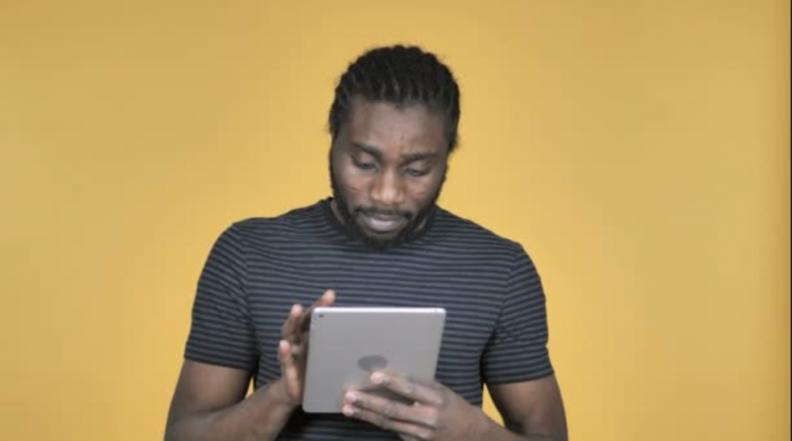
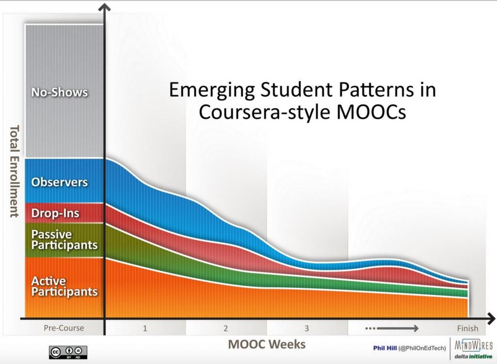
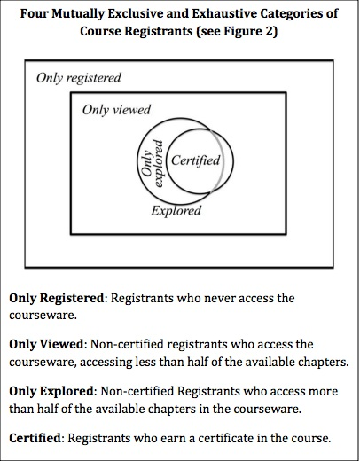
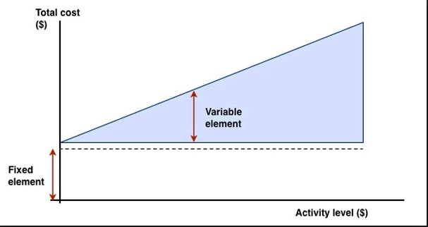

5.4 Pontos fortes e fracos dos MOOCs



Uma análise aprofundada baseada em critérios acadêmicos padrão mostra que os MOOCs possuem mais rigor acadêmico e constituem uma metodologia de ensino muito mais eficaz do que o ensino interno tradicional
Benton R. Groves, estudante de doutorado
Minha grande preocupação com os xMOOCs é a sua limitação, da forma como estão planejados atualmente, para o desenvolvimento das competências intelectuais de nível superior necessárias em um mundo digital.
Tony Bates
5.4.1 A pesquisa sobre MOOCs
No momento em que este texto é escrito (2019), os MOOCs ainda têm menos de dez anos de existência, enquanto as disciplinas on-line valendo créditos já existem há mais de 20 anos. Estas últimas têm sido alvo de muito mais pesquisas independentes, embora essa pesquisa prévia tenha sido amplamente ignorada na concepção dos primeiros MOOCs. Grande parte da pesquisa realizada até o momento sobre MOOCs provém das próprias instituições que os oferecem, principalmente sob a forma de relatórios sobre matrículas ou de autoavaliação por parte dos professores. As plataformas comerciais, tais como Coursera e Udacity, têm fornecido poucas informações de pesquisa em termos gerais, o que é lamentável, dado que têm acesso a conjuntos de dados realmente massivos. Contudo, o MIT e Harvard, parceiros fundadores da edX, estão realizando algumas investigações, principalmente sobre as suas próprias disciplinas.
Neste capítulo, recorri a pesquisas empíricas disponíveis que oferecem uma visão sobre os pontos fortes e fracos dos MOOCs. Ao mesmo tempo, devemos ter clareza de que estamos discutindo um fenômeno que até hoje tem sido marcado em grande parte por discursos políticos, emocionais e frequentemente irracionais, em vez de algo baseado em pesquisas científicas.
Por fim, convém lembrar que, nesta avaliação, aplico o critério de saber se os MOOCs tendem a conduzir aos tipos de aprendizagem necessários na era digital: em outras palavras, se ajudam a desenvolver os conhecimentos e as competências definidos no Capítulo 1.
5.4.2 Educação aberta e gratuita
5.4.2.1 A "abertura" dos MOOCs
Os MOOCs, especialmente os xMOOCs, disponibilizam conteúdos de alta qualidade de algumas das melhores universidades do mundo a qualquer pessoa que disponha de um computador e de uma conexão à internet. Isto em si representa uma proposta de valor fantástica. Neste sentido, os MOOCs constituem um acréscimo incrivelmente valioso para a educação. Quem poderia argumentar contra isso?
No entanto, os MOOCs não são a única forma de educação aberta e gratuita. As bibliotecas, os livros didáticos abertos e a radiodifusão educativa também são abertos e gratuitos e já o são há bastante tempo. Existem também lições que podemos tirar dessas formas anteriores de educação aberta e gratuita que também se aplicam aos MOOCs.
Além disso, os MOOCs nem sempre são abertos no sentido de recursos educacionais abertos. A Coursera e a Udacity, por exemplo, oferecem acesso limitado aos seus materiais para reutilização sem autorização. Em outras plataformas mais abertas, como a edX, os docentes ou instituições individuais podem restringir a reutilização dos materiais. Por fim, muitos MOOCs existem apenas por um ou dois anos e depois desaparecem, o que limita a sua utilização como recursos educacionais abertos para reutilização em outras disciplinas ou programas.
5.4.2.2 Um substituto para a educação convencional?
Vale ressaltar que essas formas anteriores de educação aberta e gratuita não substituíram a necessidade de educação formal valendo créditos, mas foram utilizadas para complementá-la ou fortalecê-la. Em outras palavras, os MOOCs são uma ferramenta de educação continuada e informal, que tem elevado valor por si mesma. Como veremos, porém, os MOOCs funcionam melhor quando as pessoas já são razoavelmente bem instruídas. Não há razões para crer, portanto, que, pelo fato de os MOOCs serem abertos e gratuitos para os usuários finais, eles forçarão inevitavelmente a redução dos custos do ensino superior convencional ou eliminarão a necessidade dele.
5.4.2.3 A resposta para a educação nos países em desenvolvimento?
Houve muitas tentativas de utilizar a radiodifusão educativa e a transmissão via satélite em países em desenvolvimento para abrir a educação às massas (ver Bates, 1984), e todas falharam substancialmente em aumentar o acesso ou reduzir os custos por uma série de razões, sendo as mais importantes:
- o custo elevado dos equipamentos terrestres (incluindo a segurança contra roubo ou danos);
- a necessidade de apoio presencial local para os estudantes sem elevados níveis de escolaridade;
- a necessidade de adaptar os conteúdos à cultura e às necessidades dos países receptores;
- a dificuldade em cobrir os custos operacionais de gestão e administração, especialmente no que se refere a avaliações, qualificações e acreditação local.
Além disso, a prioridade na maioria dos países em desenvolvimento não são os cursos universitários de professores do topo da Universidade de Stanford, mas sim um ensino médio de baixo custo e boa qualidade.
Embora os telefones celulares e, em menor escala, os tablets estejam amplamente difundidos na África, a sua utilização é relativamente dispendiosa. Por exemplo, custa cerca de 2 dólares baixar um vídeo típico do YouTube — o equivalente ao salário de um dia de trabalho para muitos africanos. As videoaulas transmitidas com duração de 50 minutos têm, portanto, aplicabilidade limitada.
Por fim, é francamente antiético deixar que as pessoas nos países em desenvolvimento acreditem que a conclusão bem-sucedida de MOOCs conduzirá a um diploma reconhecido ou à entrada em universidades nos EUA ou em qualquer outro país economicamente avançado, pelo menos nas circunstâncias atuais.
Isto não quer dizer que os MOOCs não possam ser valiosos nos países em desenvolvimento, mas isso implicará:
- ser realista quanto ao que eles podem de fato entregar;
- trabalhar em parceria com instituições e sistemas de ensino e outros parceiros nos países em desenvolvimento;
- garantir que o suporte local necessário — que custa dinheiro real — seja implementado;
- adaptar o design, o conteúdo e a entrega dos MOOCs aos requisitos culturais e econômicos desses países.
Por fim, embora os MOOCs sejam, em sua maioria, gratuitos para os participantes, eles não deixam de ter custos substanciais para as instituições que os oferecem, tema que será discutido em mais detalhes na Seção 5.4.8.
5.4.3 O público a quem os MOOCs prioritariamente atendem
Em um relatório de pesquisa de Ho et al. (2014), pesquisadores de Harvard e do MIT constataram que, nos primeiros 17 MOOCs oferecidos através do edX,
- 66% de todos os participantes, e 74% de todos os que obtiveram certificado, possuíam um diploma de bacharel ou superior;
- 71% eram do sexo masculino, e a média de idade era de 26 anos;
- este e outros estudos também revelaram que uma proporção elevada de participantes provinha de fora dos EUA, variando entre 40% e 60% do total de participantes, indicando um forte interesse internacional no acesso aberto ao ensino universitário de alta qualidade.
Em um estudo baseado em mais de 80 entrevistas em 62 instituições “ativas no espaço dos MOOCs”, Hollands e Tirthali (2014), pesquisadores do Teachers' College da Universidade de Columbia, constataram que:
Os dados das plataformas de MOOCs indicam que estes estão proporcionando oportunidades educativas a milhões de indivíduos em todo o mundo. No entanto, a maioria dos participantes nos MOOCs já é bem instruída e está empregada, e apenas uma pequena fração se envolve plenamente com os cursos. Em geral, as evidências sugerem que os MOOCs estão atualmente muito aquém de "democratizar" a educação e podem, por enquanto, estar contribuindo mais para aumentar as disparidades no acesso à educação do que para diminuí-las.
Assim, os MOOCs, como é comum na maioria das modalidades de educação continuada universitária, atendem aos setores mais instruídos, mais velhos e empregados da sociedade.
5.4.4 Persistência e comprometimento: a hipótese da cebola
Os pesquisadores do edX (Ho et al., 2014) identificaram diferentes níveis de comprometimento da seguinte forma em 17 MOOCs da edX:
- apenas inscritos (only registered): inscritos que nunca acessam o material do curso (35%);
- apenas visualizaram (only viewed): inscritos não certificados que acessam o material, cobrindo menos de metade dos capítulos disponíveis (56%);
- apenas exploraram (only explored): inscritos não certificados que acessam mais de metade dos capítulos disponíveis do curso, mas não obtêm certificado (4%);
- certificados (certified): inscritos que obtêm certificado na disciplina (5%).
Hill (2013) identificou cinco perfis de participantes nos cursos da Coursera:



Engle (2014) encontrou padrões semelhantes (também replicados em outros estudos) para os MOOCs da Universidade da Colúmbia Britânica na Coursera:
- dos que se inscrevem inicialmente, entre um terço e a metade não participa de nenhuma outra forma ativa;
- dos que participam em pelo menos uma atividade, entre 5% e 10% conseguem concluir com sucesso um certificado.
Aqueles que obtêm certificados situam-se geralmente na faixa de 5% a 10% dos inscritos e na faixa de 10% a 20% daqueles que interagiram ativamente com o MOOC pelo menos uma vez. No entanto, os números absolutos de pessoas que obtêm certificados continuam a ser significativos: mais de 43.000 em 17 cursos no edX e 8.000 em quatro cursos na UBC (entre 2.000 e 2.500 certificados por curso).
Milligan et al. (2013) constataram um padrão semelhante de comprometimento nos cMOOCs, a partir de entrevistas com uma pequena amostra de participantes (29 de entre 2.300 inscritos) a meio de um cMOOC:
- participantes passivos: no estudo de Milligan, eram aqueles que se sentiam perdidos no MOOC e raramente ou ocasionalmente faziam login;
- espectadores (lurkers): acompanhavam ativamente o curso, mas não participavam em nenhuma das atividades (pouco menos de metade dos entrevistados);
- participantes ativos: (novamente, pouco menos de metade dos entrevistados) que estavam totalmente engajados nas atividades do curso.
Os MOOCs precisam ser julgados pelo que são: uma modalidade um tanto única — e valiosa — de educação não formal. Estes resultados são muito semelhantes aos das pesquisas sobre programas educativos de radiodifusão não formal (por exemplo, o History Channel). Não se esperaria que um espectador assistisse a todos os episódios de uma série do History Channel e fizesse um exame no final. Ho et al. (p.13) produziram o seguinte diagrama para mostrar os diferentes níveis de comprometimento nos xMOOCs:



Isto é extraordinariamente semelhante ao que escrevi em 1984 sobre a hipótese da cebola na radiodifusão educativa na Grã-Bretanha (Bates, 1984):
(p.99): No centro da cebola encontra-se um pequeno núcleo de estudantes totalmente empenhados que realizam todo o curso e, quando disponível, submetem-se a uma avaliação ou exame de conclusão de curso. Em torno deste pequeno núcleo existirá uma camada um pouco maior de estudantes que não fazem qualquer exame, mas que se inscrevem em uma classe local ou em uma escola por correspondência. Poderá existir uma camada ainda maior de estudantes que, para além de verem e ouvirem, compram também o livro didático de acompanhamento, mas que não se inscrevem em qualquer curso. Depois, de longe o maior grupo, são aqueles que apenas assistem ou ouvem os programas. Mesmo dentro deste último grupo, existirão variações consideráveis, desde aqueles que assistem ou ouvem com bastante regularidade, até àqueles, novamente um número muito maior, que assistem ou ouvem apenas um programa.
Também escrevi (p.100):
Um cético poderá dizer que os únicos que aprenderam de forma eficaz foram a pequena minoria que realizou todo o trabalho do curso e se submeteu com sucesso à avaliação final... Um contra-argumento seria o de que a radiodifusão pode ser considerada bem-sucedida se atrair espectadores ou ouvintes que, de outra forma, não teriam demonstrado qualquer interesse pelo tema; o que importa é o número de pessoas expostas ao material... a questão fundamental é, então, saber se a radiodifusão atrai para a educação aqueles que, de outra forma, não estariam interessados, ou se limita a proporcionar mais uma oportunidade àqueles que já são bem instruídos... Existem bastantes evidências de que continuam a ser os mais instruídos na Grã-Bretanha e na Europa que fazem maior uso da radiodifusão educativa não formal.
Exatamente o mesmo se poderia dizer sobre os MOOCs. Em uma era digital em que o acesso fácil e aberto a novos conhecimentos é crítico para os que trabalham em indústrias baseadas no conhecimento, os MOOCs constituirão uma fonte ou meio valioso de acesso a esses saberes. A questão reside, no entanto, em saber se existem formas mais eficazes de o fazer. Assim, os MOOCs podem ser considerados uma contribuição útil — mas não propriamente revolucionária — para a educação continuada não formal.
5.4.5 O que os estudantes aprendem nos MOOCs?
Esta é uma questão muito mais difícil de responder, uma vez que muito pouca da pesquisa realizada até à data (2019) tentou responder-lhe. (Um dos motivos, como veremos na seção seguinte, é que a avaliação da aprendizagem nos MOOCs continua a ser um grande desafio). Existem pelo menos dois tipos de estudos: estudos quantitativos que procuram quantificar os ganhos de aprendizagem e estudos qualitativos que descrevem a experiência dos estudantes nos MOOCs, os quais indiretamente fornecem alguma informação sobre o que aprenderam.
5.4.5.1 Aprendizagem conceitual
Até o momento, o estudo mais quantitativo sobre a aprendizagem em MOOCs foi realizado por Colvin et al. (2014), que investigaram a "aprendizagem conceitual" em um MOOC introdutório de Física do MIT. Colvin e seus colegas compararam o desempenho dos estudantes não só entre diferentes subcategorias de participantes no MOOC, tais como aqueles sem conhecimentos prévios de física ou matemática com aqueles (como professores de física) que possuíam conhecimentos prévios significativos, mas também com estudantes do campus que cursavam a mesma matéria em uma modalidade de ensino presencial tradicional. Em essência, o estudo não encontrou diferenças significativas nos ganhos de aprendizagem entre ou dentro das duas modalidades de ensino, mas cumpre notar que os estudantes presenciais eram estudantes que tinham sido reprovados em uma versão anterior da disciplina e estavam repetindo-a.
Esta pesquisa é um exemplo clássico da ausência de diferenças significativas em estudos comparativos sobre tecnologias educativas; outras variáveis, tais como diferenças nos tipos de estudantes, foram tão importantes quanto a modalidade de entrega (para obter mais detalhes sobre o fenômeno da “ausência de diferenças significativas” nas comparações de mídias, consulte o Capítulo 10, Seção 2.2). Além disso, este design de MOOC representa uma abordagem behaviorista-cognitivista da aprendizagem que coloca forte ênfase em respostas corretas a questões conceituais. Não tenta desenvolver as habilidades necessárias em uma era digital, como as identificadas no Capítulo 1.
5.4.5.2 A experiência dos estudantes
Têm sido realizados muito mais estudos sobre a experiência dos estudantes nos MOOCs, centrando-se particularmente nos fóruns de discussão (ver, por exemplo, Kop, 2011). Em geral (embora existam exceções), as discussões não são monitoradas, cabendo aos participantes fazerem conexões e responderem aos comentários de outros estudantes.
No entanto, existem fortes críticas sobre a eficácia do elemento de discussão dos MOOCs para o desenvolvimento da análise conceitual de alto nível necessária para a aprendizagem acadêmica. Existem evidências, a partir de estudos sobre a aprendizagem on-line valendo créditos, de que, para desenvolver uma aprendizagem conceitual profunda, é necessária, na maioria dos casos, a intervenção de um especialista na matéria para esclarecer mal-entendidos ou concepções errôneas, fornecer feedback preciso, garantir que os critérios da aprendizagem acadêmica (como a utilização de provas, a clareza da argumentação, etc.) estão sendo cumpridos e assegurar o aporte e orientação necessários para aprofundar a compreensão (ver, em particular, Harasim, 2017).
Além disso, quanto mais massivo for o curso, mais provável é que os participantes sintam "sobrecarga, ansiedade e uma sensação de perda" se não existir alguma intervenção do professor ou estrutura imposta (Knox, 2014). Firmin et al. (2014) demonstraram que quando existe alguma forma de "incentivo e apoio do professor ao esforço e envolvimento dos estudantes", os resultados melhoram para todos os participantes nos MOOCs. Sem uma função estruturada para os especialistas nas matérias, os participantes deparam-se com uma grande diversidade de qualidade em termos de comentários e feedback dos restantes participantes. Existem, mais uma vez, muitas pesquisas sobre as condições necessárias para o êxito da aprendizagem colaborativa e cooperativa em grupo (ver, por exemplo, Lave e Wenger, 1991 ou Barkley, Major e Cross, 2014), e estes resultados não foram de fato aplicados de forma geral à gestão das discussões nos MOOCs.
5.4.5.3 Aprendizagem em rede e colaborativa
Um contra-argumento é o de que os cMOOCs, em especial, desenvolvem uma nova modalidade de aprendizagem baseada no trabalho em rede e na colaboração, que é essencialmente diferente da aprendizagem acadêmica, sendo assim os cMOOCs mais adequados às necessidades dos aprendizes na era digital. Os participantes adultos, em particular, têm, segundo Downes e Siemens, a capacidade de gerir autonomamente o desenvolvimento de uma aprendizagem conceitual de alto nível. Os cMOOCs são impulsionados pela "demanda", respondendo aos interesses de estudantes individuais que procuram outros colegas com interesses semelhantes e com a experiência necessária para os apoiar na sua aprendizagem; e, para muitos, este interesse pode perfeitamente não incluir a necessidade de uma aprendizagem conceitual profunda, mas sim as aplicações adequadas de conhecimentos prévios em contextos novos ou específicos. Todos os MOOCs parecem funcionar melhor para aqueles que já possuem um elevado nível de escolaridade e que, por conseguinte, trazem consigo muitas das competências conceituais desenvolvidas na educação formal quando aderem a um MOOC, contribuindo assim para ajudar aqueles que chegam sem esses conhecimentos ou competências prévias.
5.4.5.4 A necessidade de suporte ao aprendiz
Ao longo do tempo, à medida que se ganha mais experiência, os MOOCs tendem a incorporar e a adaptar alguns dos resultados das pesquisas sobre o trabalho em grupos menores às dimensões muito maiores dos MOOCs. Por exemplo, alguns MOOCs recorrem a tutores "voluntários" ou comunitários. O Departamento de Estado dos EUA organizou "MOOC camps" através de missões diplomáticas e consulados norte-americanos no estrangeiro para acompanhar os participantes de MOOCs. Os acampamentos contavam com bolsistas da comissão Fulbright e funcionários de embaixadas que conduziam discussões sobre os conteúdos e temas para os participantes de MOOCs em outros países (Haynie, 2014).
Alguns provedores de MOOCs, como a Universidade da Colúmbia Britânica, remuneraram um pequeno grupo de assistentes acadêmicos para monitorar e contribuir nos fóruns de discussão do MOOC (Engle, 2014). Engle relatou que a utilização de assistentes acadêmicos, bem como intervenções limitadas mas eficazes dos próprios professores, tornou os MOOCs da UBC mais interativos e envolventes.
No entanto, pagar para que pessoas monitorem e deem suporte aos MOOCs aumentará, naturalmente, os custos para as instituições que os oferecem. Por conseguinte, os MOOCs tendem a desenvolver novas formas automatizadas de gerir de forma eficaz a discussão em grupos muito grandes. Por exemplo, a Universidade de Edimburgo experimentou um "teacherbot" automatizado que analisava as publicações de estudantes e professores no Twitter associadas a um MOOC e dirigia comentários predeterminados aos estudantes para estimular a discussão e a reflexão (Bayne, 2015). Estes resultados e abordagens são coerentes com as pesquisas anteriores sobre a importância da presença do professor para uma aprendizagem on-line bem-sucedida em cursos valendo créditos (consulte o Capítulo 4.4.3).
No entanto, até lá, há ainda muito trabalho por fazer para que os MOOCs proporcionem o suporte e a estrutura necessários para garantir uma aprendizagem conceitual profunda onde esta ainda não exista nos estudantes. O desenvolvimento das competências necessárias em uma era digital será provavelmente um desafio ainda maior quando se lida com números massivos de pessoas. No entanto, necessitamos de muito mais pesquisas sobre o que os participantes realmente aprendem nos MOOCs e sob que condições para podermos extrair conclusões seguras.
5.4.6 Avaliação
A avaliação do número massivo de participantes nos MOOCs revelou-se um grande desafio. Trata-se de um tema complexo que só pode ser abordado aqui de forma breve. No entanto, o Capítulo 6, Seção 8 oferece uma análise geral de diferentes tipos de avaliação, e Suen (2014) apresenta uma visão abrangente e equilibrada sobre a forma como a avaliação tem sido utilizada nos MOOCs até à data. Esta seção baseia-se amplamente no artigo de Suen.
5.4.6.1 Tarefas corrigidas por computador
A avaliação até o momento nos MOOCs tem sido prioritariamente de dois tipos. A primeira baseia-se em testes quantitativos de múltipla escolha ou caixas de resposta onde fórmulas ou o “código correto” podem ser inseridos e verificados automaticamente. Normalmente, os participantes recebem feedback imediato e automatizado sobre as suas respostas, variando de simples respostas corretas ou erradas a respostas mais complexas, dependendo do tipo de resposta verificado; mas, em todos os casos, o processo é normalmente totalmente automatizado.
Para a verificação direta de fatos, princípios, fórmulas, equações e outras formas de aprendizagem conceitual onde existem respostas claras e corretas, este método funciona bem. De fato, as avaliações de múltipla escolha corrigidas por computador já eram utilizadas pela Open University do Reino Unido na década de 1970, embora não existissem os meios para fornecer feedback imediato on-line. No entanto, este método de avaliação é limitado para testar a aprendizagem profunda ou "transformadora", e particularmente fraco para avaliar as competências intelectuais necessárias em uma era digital, como o pensamento criativo ou original.
5.4.6.2 Avaliação por pares
Outro tipo de avaliação que tem sido experimentado nos MOOCs é a avaliação por pares, em que os participantes avaliam o trabalho uns dos outros. A avaliação por pares não é nova. Tem sido utilizada com sucesso para a avaliação formativa em salas de aula tradicionais e em alguns cursos on-line valendo créditos (Falchikov e Goldfinch, 2000; van Zundert et al., 2010). Mais importante ainda, a avaliação por pares é vista como uma forma poderosa de melhorar a compreensão profunda e os conhecimentos através do processo em que os estudantes avaliam o trabalho dos outros e, ao mesmo tempo, pode ser útil para desenvolver algumas das habilidades necessárias em um mundo digital, como o pensamento crítico, para os participantes que avaliam outros colegas.
No entanto, uma característica fundamental do sucesso da utilização da avaliação por pares tem sido o envolvimento próximo de um professor ou tutor, no fornecimento de referências, rubricas ou critérios para a avaliação, e na monitoração e ajuste das avaliações dos pares para garantir a coerência e a correspondência com as referências definidas pelo professor. Embora um professor possa fornecer as referências e rubricas nos MOOCs, a monitoração atenta das múltiplas avaliações por pares é difícil, se não impossível, com o número muito elevado de participantes. Como resultado, os participantes de MOOCs ficam frequentemente indignados por serem avaliados aleatoriamente por outros participantes que podem não ter, e muitas vezes não têm, o conhecimento ou a capacidade para fazer uma avaliação "justa" ou precisa do trabalho de outro colega.
Têm sido tentadas várias abordagens para contornar as limitações da avaliação por pares nos MOOCs, tais como avaliações por pares calibradas, baseadas na média de todas as classificações dos pares, e estabilização Bayesiana post hoc (Piech et al., 2013), mas embora estas técnicas estatísticas reduzam um pouco o erro (ou dispersão) da avaliação por pares, continuam sem resolver os problemas de erros sistemáticos de julgamento dos avaliadores devido a concepções errôneas. Isto constitui particularmente um problema quando a maioria dos participantes não compreende os conceitos fundamentais de um MOOC, caso em que a avaliação por pares se transforma no cego guiando o cego.
5.4.6.3 Avaliação automatizada de ensaios
Esta é outra área onde tem havido tentativas de automatizar a pontuação (Balfour, 2013). Embora estes métodos sejam cada vez mais sofisticados, atualmente estão limitados, em termos de avaliação precisa, à medição prioritária de competências de escrita técnica, tais como a gramática, a ortografia e a construção de frases. Mais uma vez, não avaliam com precisão ensaios mais longos onde se exigem competências intelectuais de nível superior.
5.4.6.4 Selos, certificados e microcredenciais
Particularmente nos xMOOCs, os participantes podem receber um certificado ou um “selo/badge” pela conclusão bem-sucedida do curso, com base em um teste final (normalmente corrigido por computador) que afere o nível de aprendizagem. No entanto, a maioria das instituições que oferecem MOOCs não aceita os seus próprios certificados para efeitos de admissão ou créditos nos seus próprios programas presenciais. Provavelmente nada ilustra melhor a confiança na qualidade da avaliação do que este fracasso dos provedores de MOOCs em reconhecer o seu próprio ensino.
As microcredenciais baseadas em MOOCs constituem um desenvolvimento mais recente. Uma microcredencial é qualquer uma de uma série de novas certificações que abrangem mais do que um único curso, mas menos do que um diploma de graduação completo. Pickard (2018) oferece uma análise de mais de 450 microcredenciais baseadas em MOOCs. Pickard afirma:
As microcredenciais podem ser vistas como parte de uma tendência para a modularidade e empilhabilidade (stackability) no ensino superior, sendo a ideia a de que cada pequena parte de uma educação pode ser consumida por si só ou pode ser agregada a outras partes para formar algo maior. Cada curso é composto por unidades, cada unidade é composta por lições; os cursos podem acumular-se em Especializações ou Séries-X; estas podem acumular-se em diplomas parciais, como os MicroMasters, ou até em diplomas completos (embora apenas algumas microcredenciais estejam estruturadas como partes de diplomas).
Em sua análise, Pickard constatou que nas microcredenciais oferecidas através das principais plataformas de MOOCs, tais como Coursera, edX, Udacity e FutureLearn:
- as propinas dos estudantes variam entre US$ 250 e US$ 17.000;
- algumas microcredenciais, embora não todas, oferecem alguma oportunidade de obter créditos para um programa de graduação. Normalmente, os créditos universitários são atribuídos se e somente se o estudante se matricular no programa de graduação específico associado à microcredencial;
- não são credenciadas, reconhecidas ou avaliadas por organizações terceiras (exceto no que se refere aos programas de graduação universitária). Esta variabilidade e falta de padronização constitui um problema tanto para os estudantes como para os empregadores, uma vez que dificulta a comparação entre as várias microcredenciais;
- com tanta variabilidade, de que forma um potencial estudante escolheria entre as várias opções? Além disso, sem uma compreensão detalhada destas opções, de que forma um empregador interpretaria ou compararia estas microcredenciais quando surgissem em um currículo?
No entanto, em uma era digital, tanto os trabalhadores como os empregadores procurarão cada vez mais formas de “credenciar” unidades de aprendizagem menores do que um diploma formal, mas de forma a que possam ser acumuladas para obter, eventualmente, um diploma de graduação completo. A questão reside em saber se a vinculação desta tendência ao movimento dos MOOCs é o melhor caminho a seguir.
Seguramente, uma forma melhor seria desenvolver microcredenciais como parte de ou em paralelo com um programa regular de mestrado on-line. Por exemplo, já em 2003, a Universidade da Colúmbia Britânica, no seu Mestrado on-line em Tecnologia Educacional, permitia que os estudantes fizessem uma disciplina de cada vez, ou as cinco disciplinas fundamentais para um certificado de pós-graduação, ou adicionassem mais quatro disciplinas e um projeto ao certificado para obter um diploma de Mestrado completo. Tais microcredenciais não seriam MOOCs, a menos que (a) estejam abertas a qualquer pessoa e (b) sejam gratuitas ou tenham um custo tão baixo que qualquer pessoa possa fazê-las. A questão passa a ser se a instituição aceitará tais credenciais do tipo MOOC como parte de um diploma completo. Caso contrário, é pouco provável que os empregadores reconheçam essas microcredenciais, uma vez que não saberão quanto valem.
5.4.6.5 A intenção subjacente à avaliação
Avaliar a avaliação nos MOOCs exige analisar a intenção que lhe está subjacente. Existem muitos objetivos diferentes por trás da avaliação (consulte o Capítulo 6, Seção 8). A avaliação por pares e o feedback imediato em testes corrigidos por computador podem ser extremamente valiosos para a avaliação formativa ou feedback, permitindo aos participantes ver o que compreenderam e ajudando a desenvolver ainda mais a sua compreensão de conceitos-chave. Nos cMOOCs, como salienta Suen, a aprendizagem é medida através da comunicação que ocorre entre os participantes do MOOC, resultando na validação do conhecimento através de inteligência coletiva (crowdsourced) — é aquilo em que a totalidade dos participantes passa a acreditar ser verdade em resultado da participação no MOOC, pelo que a avaliação formal é desnecessária. No entanto, o que se aprende desta forma não é necessariamente conhecimento validado academicamente, o que, para ser justo, não é a preocupação dos defensores dos cMOOCs.
A avaliação acadêmica é uma forma de moeda de troca, relacionada não só com a medição do aproveitamento dos estudantes, mas também afetando a mobilidade destes (por exemplo, a entrada na pós-graduação) e, talvez mais importante, as oportunidades de emprego e promoção. Sob a perspectiva do estudante, a validade da moeda — o reconhecimento e a transferibilidade da qualificação — é fundamental. Até à data, os MOOCs não conseguiram demonstrar que são capazes de avaliar com exatidão os resultados de aprendizagem dos participantes para além da compreensão e do conhecimento de ideias, princípios e processos (reconhecendo que existe algum valor apenas nisso). O que os MOOCs não conseguiram demonstrar é que conseguem desenvolver ou avaliar a compreensão profunda ou as competências intelectuais exigidas na era digital. De fato, isto pode muito bem não ser possível dentro das limitações da massividade, que é a sua principal característica distintiva em relação a outras formas de aprendizagem on-line.
5.4.7 Fixação de marca (branding)
Hollands e Tirthali (2014), no seu estudo sobre as expectativas institucionais em relação aos MOOCs, constataram que a construção e a manutenção da marca constituíam a segunda razão mais importante para as instituições lançarem MOOCs (a mais importante era alargar o alcance, o que também pode ser visto em parte como um exercício de fixação de marca). A fixação de marcas institucionais através da utilização de MOOCs foi impulsionada pelo fato de universidades de elite da Ivy League, tais como Stanford, MIT e Harvard, liderarem o movimento, e pela Coursera limitar o acesso à sua plataforma apenas a universidades de “primeiro nível”. Isto, naturalmente, levou a um efeito de adesão geral (bandwagon effect), especialmente porque muitas das universidades que lançaram MOOCs tinham anteriormente desdenhado a transição para a aprendizagem on-line valendo créditos. Os MOOCs proporcionaram a estas instituições de elite uma forma de saltar para a frente da fila em termos de estatuto como “inovadoras” da aprendizagem on-line, mesmo tendo chegado tarde à festa.
É evidente que faz sentido que as instituições utilizem os MOOCs para levar as suas áreas de especialização a um público muito mais vasto, como a Universidade de Alberta oferecendo um MOOC sobre dinossauros, o MIT sobre eletrônica e Harvard sobre os heróis gregos antigos. Os MOOCs ajudam certamente a alargar o conhecimento sobre a qualidade de um determinado professor (que fica normalmente encantado por atingir mais estudantes em um único MOOC do que em uma vida inteira de ensino presencial). Os MOOCs são também uma boa forma de dar a conhecer a qualidade das disciplinas e dos programas oferecidos por uma instituição.
No entanto, é difícil medir o impacto real dos MOOCs na fixação de marca. Como afirmam Hollands e Tirthali:
Embora muitas instituições tenham recebido uma atenção mediática significativa em resultado das suas atividades de MOOCs, isolar e medir o impacto de qualquer nova iniciativa na marca é um exercício difícil. A maioria das instituições está apenas começando a pensar sobre a forma de captar e quantificar os benefícios relacionados com a marca.
Em particular, estas instituições de elite não necessitam de MOOCs para aumentar o número de candidatos aos seus programas presenciais (nenhuma até o momento está disposta a aceitar a conclusão com sucesso de um MOOC para admissão em cursos regulares), dado que as instituições de elite não têm qualquer dificuldade em atrair estudantes já altamente qualificados.
Além disso, a partir do momento em que todas as outras instituições começam a oferecer MOOCs, o efeito de marca perde-se até certo ponto. De fato, expor um ensino de má qualidade ou um mau planejamento de curso a muitos milhares de pessoas pode ter um impacto negativo na marca de uma instituição, como constatou o Georgia Institute of Technology quando um dos seus MOOCs falhou fragorosamente (Jaschik, 2013). Contudo, de modo geral, a maioria dos MOOCs consegue fazer chegar a reputação de uma instituição em termos de conhecimento e experiência a muito mais pessoas do que o faria através de qualquer outra forma de ensino ou de publicidade.
5.4.8 Custos e economias de escala



Um dos principais pontos fortes apontados para os MOOCs é o fato de serem gratuitos para os participantes. Mais uma vez, isto é mais verdade na teoria do que na prática, porque as instituições provedoras de MOOCs podem cobrar uma gama de taxas, especialmente para avaliação. Além disso, embora os MOOCs possam ser gratuitos para os participantes, não deixam de ter custos substanciais para as instituições que os oferecem. Do mesmo modo, existem grandes diferenças nos custos dos xMOOCs e dos cMOOCs, sendo estes últimos geralmente muito mais baratos de desenvolver, embora continuem a existir custos de oportunidade ou custos reais mesmo para os cMOOCs.
5.4.8.1 O custo de produção e realização de MOOCs
Existem ainda muito poucas informações até à data sobre os custos reais de concepção e realização de um MOOC, uma vez que não existem estudos publicados suficientes para tirar conclusões seguras sobre os custos dos MOOCs. No entanto, dispomos de alguns dados. A Universidade de Ottawa (2013) estimou o custo de desenvolvimento de um xMOOC, com base em dados fornecidos à universidade pela Coursera e no seu próprio conhecimento sobre o custo de desenvolvimento de disciplinas on-line valendo créditos, em cerca de US$ 100.000.
Engle (2014) informou sobre o custo real de cinco MOOCs da Universidade da Colúmbia Britânica. Existem duas características importantes relativas aos MOOCs da UBC que não se aplicam necessariamente a outros MOOCs. Em primeiro lugar, os MOOCs da UBC utilizaram uma grande variedade de métodos de produção de vídeo, desde a produção em estúdio completo até à gravação em computadores pessoais, pelo que os custos de desenvolvimento variaram consideravelmente consoante a sofisticação da técnica de produção de vídeo. Em segundo lugar, os MOOCs da UBC recorreram extensivamente a assistentes acadêmicos remunerados, que monitoravam as discussões e adaptavam ou alteravam os materiais dos cursos em resultado do feedback dos estudantes, pelo que existiram também custos substanciais de entrega.
O Apêndice B do relatório da UBC indica um custo total piloto de US$ 217.657, mas este valor exclui a assistência acadêmica ou, talvez o custo mais significativo, o tempo dos professores. A assistência acadêmica correspondeu a 25% do custo global no primeiro ano (excluindo o custo dos professores). A partir dos custos de produção de vídeo (US$ 95.350) e da proporção de custos (44%) dedicados à produção de vídeo indicada na Figura 1 do relatório, estimo o custo direto em US$ 216.700, ou aproximadamente US$ 54.000 por MOOC, excluindo o tempo dos docentes e o suporte de coordenação (isto é, excluindo a administração do programa e os custos indiretos), mas incluindo a assistência acadêmica. No entanto, a variação dos custos é quase tão importante quanto a média. Os custos de produção de vídeo do MOOC que utilizou uma produção intensiva em estúdio foram mais de seis vezes superiores aos custos de produção de vídeo de um dos outros MOOCs.
5.4.8.2 Os custos comparativos das disciplinas on-line valendo créditos
Os principais fatores ou variáveis de custo no ensino on-line e a distância valendo créditos são relativamente bem conhecidos, com base em pesquisas anteriores de Rumble (2001) e Hülsmann (2003). Utilizando uma metodologia de custeio semelhante, acompanhei e analisei o custo de um programa de mestrado on-line na Universidade da Colúmbia Britânica ao longo de um período de sete anos (Bates e Sangrà, 2011). Este programa utilizava principalmente um sistema de gestão de aprendizagem como tecnologia central, com professores desenvolvendo as disciplinas e fornecendo suporte on-line aos estudantes e avaliação, auxiliados, quando necessário, por docentes adjuntos adicionais para lidar com turmas maiores.
Constatou-se na análise dos custos do programa da UBC que, em 2003, os custos de desenvolvimento situavam-se aproximadamente entre US$ 20.000 e US$ 25.000 por disciplina. Contudo, ao longo de um período de sete anos, o desenvolvimento de cursos constituiu menos de 15% do custo total, ocorrendo principalmente no primeiro ano do programa. Os custos de entrega, que incluíam o suporte on-line aos estudantes e a avaliação dos estudantes, constituíram mais de um terço do custo total e, naturalmente, continuaram a verificar-se em cada ano de oferta do curso. Assim, no ensino on-line valendo créditos, os custos de entrega tendem a ser mais do que o dobro dos custos de desenvolvimento ao longo da vida de um programa.
A principal diferença entre os MOOCs, o ensino on-line valendo créditos e o ensino presencial reside no fato de, em princípio, os MOOCs eliminarem todos os custos de entrega, uma vez que não oferecem suporte aos estudantes nem avaliações corrigidas por professores humanos, embora na prática isto nem sempre seja verdade.
5.4.8.3 Custos de oportunidade
Existe também, claramente, um custo de oportunidade elevado envolvido na oferta de xMOOCs. Por definição, os docentes mais conceituados estão envolvidos na oferta de MOOCs. Em uma grande universidade de pesquisa, estes docentes têm, no máximo, uma carga horária de quatro a seis disciplinas por ano. Embora a maioria dos professores se voluntarie para realizar MOOCs, o seu tempo é limitado. Isso significa deixar de lecionar uma disciplina regular durante pelo menos um semestre, o que equivale a 25% ou mais da sua carga horária de ensino, ou o desenvolvimento e a realização de xMOOCs substituem o tempo dedicado à pesquisa. Além disso, ao contrário das disciplinas regulares, que funcionam entre cinco e sete anos, os MOOCs são frequentemente oferecidos apenas uma ou duas vezes.
5.4.8.4 Comparando o custo dos MOOCs com o das disciplinas on-line valendo créditos
Seja qual for a perspectiva de análise, o custo de desenvolvimento de um xMOOC, sem incluir o tempo do professor, tende a ser quase o dobro do custo de desenvolvimento de uma disciplina on-line valendo créditos que utilize um sistema de gestão de aprendizagem, devido à utilização de vídeo nos MOOCs. Se o custo do professor for incluído, os custos de produção do xMOOC aproximam-se do triplo dos de uma disciplina regular on-line com duração semelhante, sobretudo tendo em conta o tempo suplementar que os professores tendem a dedicar a uma demonstração tão pública do seu ensino em um MOOC. Os xMOOCs poderiam (e alguns fazem-no) utilizar métodos de produção mais baratos, como um LMS em vez de vídeo para a entrega de conteúdos, ou a utilização e reedição de gravações de vídeo de aulas presenciais através de captura de aulas.
Sem suporte aos estudantes nem assistência acadêmica, contudo, os custos de entrega dos MOOCs são nulos, e é aqui que reside o enorme potencial de poupança. Se o custo for calculado por participante, os custos unitários do MOOC são extremamente baixos, combinando os custos de produção e de entrega. Mesmo que se calcule o custo por estudante que obtém com sucesso um certificado final de curso, este será muitas vezes inferior ao custo de um estudante aprovado on-line ou presencialmente. Se considerarmos um MOOC cujo desenvolvimento custa cerca de US$ 100.000 e 5.000 participantes concluem o certificado final de curso, o custo médio por participante aprovado é de US$ 20. No entanto, isto pressupõe que o mesmo tipo de conhecimentos e competências está sendo avaliado em um MOOC e em um programa de mestrado regular; normalmente não é esse o caso.
5.4.8.5 Custos versus resultados
A questão reside, portanto, em saber se os MOOCs podem ter sucesso sem o custo do suporte aos estudantes e da avaliação humana ou, mais provavelmente, se os MOOCs podem reduzir substancialmente os custos de entrega através da automação, sem perda de qualidade no desempenho dos estudantes. Não existem, contudo, evidências até o momento de que consigam fazê-lo em termos de competências de aprendizagem de nível superior e de conhecimentos "profundos". Para avaliar este tipo de aprendizagem, é necessário definir tarefas que testem esses conhecimentos, e essas avaliações necessitam normalmente de correção humana, o que aumenta os custos. Sabemos também, a partir de pesquisas anteriores sobre programas on-line regulares de sucesso, que a presença ativa do professor on-line é um fator crítico para uma aprendizagem on-line bem-sucedida. Assim, um suporte adequado aos estudantes e a avaliação continuam a ser um grande desafio para os MOOCs. Os MOOCs são, pois, uma boa forma de ensinar determinados níveis de conhecimento, mas terão grandes problemas estruturais para ensinar outros tipos de conhecimento. Infelizmente, é o tipo de conhecimento mais necessário em um mundo digital que os MOOCs têm dificuldade em ensinar.
5.4.8.6 Modelos de negócios dos MOOCs e custo-benefício
Em termos de modelos de negócios sustentáveis, Baker e Passmore (2016) examinaram vários modelos de negócios possíveis para apoiar os MOOCs (mas não oferecem qualquer custeio real). As universidades de elite puderam avançar para os xMOOCs graças a doações generosas de fundações privadas e à utilização de fundos patrimoniais (endowments), mas estas formas de financiamento são limitadas para a maioria das instituições. A Coursera e a Udacity têm a oportunidade de desenvolver modelos de negócios bem-sucedidos através de vários meios, tais como a cobrança de taxas às instituições provedoras de MOOCs pela utilização da sua plataforma, a cobrança de taxas pelos selos ou certificados, a venda de dados dos participantes, o patrocínio corporativo ou a publicidade direta.
No entanto, particularmente no caso de universidades ou faculdades financiadas com fundos públicos, a maioria destas fontes de receitas não está disponível ou não é permitida, pelo que é difícil ver como podem começar a recuperar o custo de um investimento substancial em MOOCs, mesmo "canibalizando" materiais de MOOCs para ou a partir de utilização no campus. De cada vez que se oferece um MOOC, retiram-se recursos que poderiam ser utilizados em programas on-line valendo créditos. Assim, as instituições deparam-se com decisões difíceis sobre onde investir os seus recursos para a aprendizagem on-line. Os argumentos a favor da canalização de recursos escassos para os MOOCs estão longe de ser claros, a menos que se encontre uma forma de conceder créditos pela conclusão bem-sucedida de MOOCs.
5.4.9 Resumo dos pontos fortes e fracos
Os principais pontos desta análise dos pontos fortes e fracos dos MOOCs podem ser resumidos da seguinte forma:
5.4.9.1 Pontos fortes
- Os MOOCs, em especial os xMOOCs, disponibilizam conteúdos de alta qualidade de algumas das melhores universidades do mundo de forma gratuita ou a baixo custo a qualquer pessoa que disponha de um computador e de uma conexão à internet;
- Os MOOCs podem ser úteis para abrir o acesso a conteúdos de alta qualidade, particularmente nos países em desenvolvimento, mas, para o fazer com sucesso, será necessária uma grande adaptação e um investimento substancial em suporte e parcerias locais;
- Os MOOCs são valiosos para o desenvolvimento da aprendizagem conceitual básica e para a criação de grandes comunidades on-line de interesse ou de prática;
- Os MOOCs constituem uma modalidade extremamente valiosa de aprendizagem ao longo da vida e de educação continuada;
- Os MOOCs forçaram as instituições convencionais, e em especial as de elite, a reavaliar as suas estratégias em relação à aprendizagem on-line e aberta;
- As instituições puderam alargar a sua marca e o seu prestígio ao tornarem pública a sua experiência e excelência em determinadas áreas acadêmicas;
- A principal proposta de valor dos MOOCs consiste em eliminar, através da automação informática e/ou da comunicação entre pares, os elevados custos variáveis do ensino superior associados ao fornecimento de suporte aos estudantes e à avaliação de qualidade.
5.4.9.2 Pontos fracos
- O elevado número de matrículas nos MOOCs é ilusório; menos de metade dos inscritos participa ativamente e, destes, apenas uma pequena proporção conclui o curso com sucesso; no entanto, o número absoluto de pessoas que concluem continua a ser superior ao dos cursos convencionais;
- Os MOOCs são caros de desenvolver e, embora as organizações comerciais que oferecem plataformas de MOOCs tenham oportunidades para modelos de negócios sustentáveis, é difícil ver de que forma as instituições de ensino superior financiadas com fundos públicos podem desenvolver modelos de negócios sustentáveis para os MOOCs;
- Os MOOCs tendem a atrair pessoas que já possuem um elevado nível de escolaridade, em vez de alargar o acesso;
- Os MOOCs têm-se revelado limitados na capacidade de desenvolver uma aprendizagem acadêmica profunda ou as competências intelectuais de nível superior necessárias em uma sociedade digital;
- A avaliação dos níveis mais elevados de aprendizagem continua a ser um desafio para os MOOCs, a ponto de a maioria das instituições provedoras de MOOCs não reconhecer as suas próprias disciplinas para efeitos de créditos;
- Os materiais dos MOOCs podem estar limitados por direitos autorais ou restrições temporais para reutilização como recursos educacionais abertos.
Referências
Baker, R. and Passmore, D. (2016) Value and Pricing of MOOCs Education Sciences, 27 de maio
Balfour, S. P. (2013) Assessing writing in MOOCs: Automated essay scoring and calibrated peer review Research & Practice in Assessment, Vol. 8
Barkley, E, Major, C.H. and Cross, K.P. (2014) Collaborative Learning Techniques San Francisco: Jossey-Bass/Wiley
Bates, A. (1984) Broadcasting in Education: An Evaluation London: Constables (esgotado)
Bates, A. and Sangrà, A. (2011) Managing Technology in Higher Education San Francisco: Jossey-Bass/John Wiley and Co
Bayne, S. (2015) Teacherbot: interventions in automated teaching, Teaching in Higher Education, Vol. 20, No.4, pp. 455-467
Colvin, K. et al. (2014) Learning an Introductory Physics MOOC: All Cohorts Learn Equally, Including On-Campus Class, IRRODL, Vol. 15, No. 4
Engle, W. (2104) UBC MOOC Pilot: Design and Delivery Vancouver BC: University of British Columbia
Falchikov, N. and Goldfinch, J. (2000) Student Peer Assessment in Higher Education: A Meta-Analysis Comparing Peer and Teacher Marks Review of Educational Research, Vol. 70, No. 3
Firmin, R. et al. (2014) Case study: using MOOCs for conventional college coursework Distance Education, Vol. 35, No. 2
Harasim, L. (2017) Learning Theory and Online Technologies 2nd edition New York/London: Routledge
Haynie, D. (2014). State Department hosts ‘MOOC Camp’ for online learners. US News, 20 de janeiro
Hill, P. (2013) Some validation of MOOC student patterns graphic, e-Literate, 30 de agosto
Ho, A. et al. (2014) HarvardX and MITx: The First Year of Open Online Courses Fall 2012-Summer 2013 (HarvardX and MITx Working Paper No. 1), 21 de janeiro
Hollands, F. and Tirthali, D. (2014) MOOCs: Expectations and Reality New York: Columbia University Teachers’ College, Center for Benefit-Cost Studies of Education
Hülsmann, T. (2003) Costs without camouflage: a cost analysis of Oldenburg University’s two graduate certificate programs offered as part of the online Master of Distance Education (MDE): a case study, in Bernath, U. and Rubin, E., (eds.) Reflections on Teaching in an Online Program: A Case Study Oldenburg, Germany: Bibliothecks-und Informationssystem der Carl von Ossietsky Universität Oldenburg
Jaschik, S. (2013) MOOC Mess, Inside Higher Education, 4 de fevereiro
Knox, J. (2014) Digital culture clash: ‘massive’ education in the e-Learning and Digital Cultures Distance Education, Vol. 35, No. 2
Kop, R. (2011) The Challenges to Connectivist Learning on Open Online Networks: Learning Experiences during a Massive Open Online Course International Review of Research into Open and Distance Learning, Vol. 12, No. 3
Lave, J. and Wenger, E. (1991). Situated Learning: Legitimate Peripheral Participation. Cambridge: Cambridge University Press
Milligan, C., Littlejohn, A. and Margaryan, A. (2013) Patterns of engagement in connectivist MOOCs, Merlot Journal of Online Learning and Teaching, Vol. 9, No. 2
Pinckard, L. (2018) Analysis of 450 MOOC-Based Microcredentials Reveals Many Options But Little Consistency, Class Central, 18 de julho
Piech, C., Huang, J., Chen, Z., Do, C., Ng, A., & Koller, D. (2013) Tuned models of peer assessment in MOOCs. Palo Alto, CA: Stanford University
Rumble, G. (2001) The costs and costing of networked learning, Journal of Asynchronous Learning Networks, Vol. 5, No. 2
Suen, H. (2104) Peer assessment for massive open online courses (MOOCs) International Review of Research into Open and Distance Learning, Vol. 15, No. 3
University of Ottawa (2013) Report of the e-Learning Working Group Ottawa ON: The University of Ottawa
van Zundert, M., Sluijsmans, D., van Merriënboer, J. (2010). Effective peer assessment processes: Research findings and future directions Learning and Instruction, 20, 270-279
Atividade 5.4 Avaliando os pontos fortes e fracos dos MOOCs
1. Você concorda que os MOOCs constituem apenas mais uma forma de radiodifusão educativa? Quais são os seus motivos?
2. É razoável comparar os custos dos xMOOCs com os custos das disciplinas on-line valendo créditos? Estarão competindo pelas mesmas verbas ou serão categoricamente diferentes na sua fonte de financiamento e objetivos? Se sim, de que forma?
3. Poderia defender que os cMOOCs constituem uma proposta de valor melhor do que os xMOOCs — ou serão, mais uma vez, demasiado diferentes para serem comparados?
4. Os MOOCs são claramente mais baratos do que as disciplinas presenciais ou on-line valendo créditos, se forem avaliados com base no custo por participante que conclui o curso com sucesso. Será esta uma comparação justa e, se não, por quê?
5. Acha que as instituições deveriam conceder créditos aos estudantes que concluam MOOCs com sucesso? Se sim, por quê, e quais as implicações?
Apresento as minhas opiniões pessoais sobre estas questões no podcast abaixo, mas gostaria que chegasse às suas próprias conclusões antes de ouvir a minha resposta, uma vez que não existem respostas certas ou erradas neste caso:
Um elemento de áudio foi excluído desta versão do texto. Você pode ouvi-lo on-line aqui: https://pressbooks.bccampus.ca/teachinginadigitalagev2/?p=159